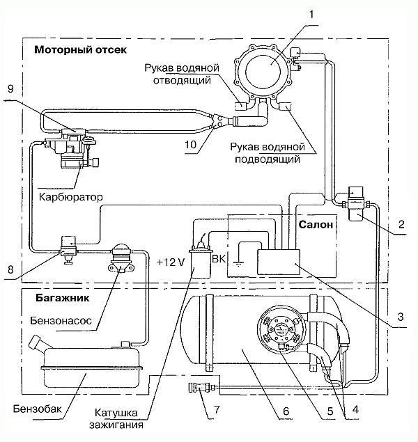
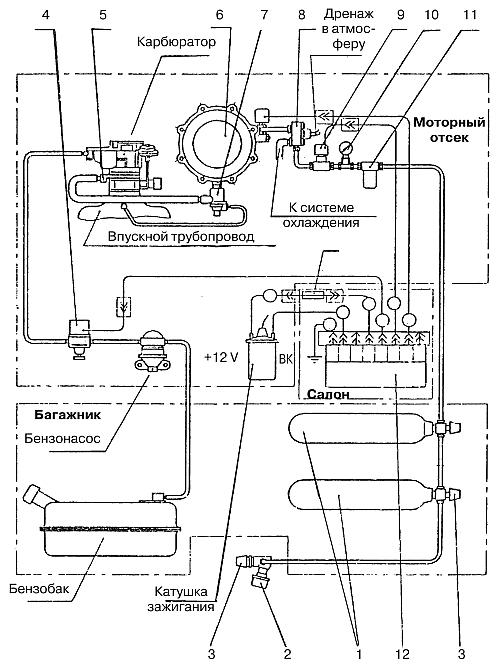

Газобаллонные установки ЗАО «Автосистема».
Принципиальная схема оригинального газового оборудования, имеющего то же название, что и фирма-изготовитель – «Автосистема», показана на рис. 23.

Рис. 23. Схема соединения и питания газовой аппаратуры «Автосистема»: 1 – редуктор-испаритель; 2 – электромагнитный газовый клапан с фильтром; 3 – электронный блок управления; 4 – патрубки системы вентиляции блока запорно-предохранительной арматуры; 5 – блок запорно-предохранительной арматуры; 6 – баллон для ГСН; 7 – выносное заправочное устройство; 8 – электромагнитный бензиновый клапан; 9 – смеситель; 10 – тройник-дозатор.
Сжиженный нефтяной газ хранится в газовом баллоне (6), рассчитанном на рабочее давление 1,6 МПа.
Баллон заправляют газом через выносное заправочное устройство (7) с установленным в нем обратным клапаном, предотвращающим выброс газа из баллона. Блок (5) запорно-предохранительной арматуры включает в себя заправочный вентиль, предохранительный клапан, расходный вентиль жидкой фазы, устройство ограничения максимально допустимого уровня заправки газом. Система вентиляции состоит из прочного корпуса и прозрачной пластмассовой крышки, гибких вентиляционных шлангов (4) и двух фланцев. При закрытой крышке система полностью исключает попадание газа в салон автомобиля при нарушении герметичности элементов блока арматуры. Блок арматуры с системой вентиляции крепится к фланцу, расположенному на обечайке баллона.
От блока арматуры газ поступает по газопроводу в подкапотное пространство к электромагнитному газовому клапану-фильтру (2) и затем по газопроводу к редуктору-испарителю (1). Из редуктора через тройник-дозатор (10) газ идет в смеситель (9). Для прерывания подачи бензина при работе на газовом топливе между бензонасосом и карбюратором установлен электромагнитный бензиновый клапан (8).
Для подогрева и испарения газа редуктор-испаритель подключен шлангами к системе охлаждения двигателя.
Управление электромагнитными клапанами и другими электрическими элементами, являющимися составной частью ГБА, осуществляет электронный блок управления (3). Этот блок выпускают в нескольких модификациях, различающихся набором функций. Наиболее полная модификация имеет переключатели видов топлива, систему управления газовыми и бензиновыми клапанами в процессе пуска двигателя и систему управления углом опережения зажигания. При переходе с одного топлива на другое угол опережения зажигания автоматически меняется, при этом мощность искрового разряда при переходе на газ увеличивается на 35–40 %.
В блоке предусмотрена функция управления клапаном паровой фазы блока арматуры, что обеспечивает автоматическое включение и выключение клапана при достижении определенной температуры теплоносителя, обогревающего редуктор-испаритель. Блок снабжен индикатором, показывающим уровень газа в баллоне.
Переход с бензина на газ и с газа на бензин осуществляет водитель со своего места без остановки автомобиля.
Особенности конструкции газовой аппаратуры «Автосистема»:
– унификация соединительных элементов по моделям автомобилей (легковые, грузовые и автобусы);
– взаимозаменяемость основных агрегатов на подобные других производителей;
– высокие эксплуатационные качества (устойчивый пуск холодного двигателя, простота обслуживания и ремонта);
– модульная компоновка основных агрегатов;
– выполнение резинотехнических изделий из материалов нового поколения, практически не требующих замены в течение 5–7 лет.
Одна из особенностей оборудования «Автосистемы» – это модульная компоновка. В стремлении более полно удовлетворить запросы автомобилистов, специалисты из множества вариантов блоков составляют нужную потребителю комплектацию. Однако этот подход имеет существенный недостаток – множится число регулировок: на редукторе два винта холостого хода, на экономайзере или дозаторе по два винта регулировки расхода топлива и т. д. Среднестатистический автомобилист не привык к такому обилию винтов. Обычно он обходится двумя винтами на карбюраторе. К тому же нельзя не отметить, что увеличение числа диафрагм и электроконтактов не повышает надежности системы.
Вариант схемы основных элементов ГБО, работающих на КПГ, представлен ЗАО «Автосистема» (рис. 24).

Рис. 24. Схема основных элементов ГБО, работающих на КПГ: 1 – баллоны газовые облегченные; 2 – узел заправочный выносной; 3 – вентиль; 4 – электромагнитный бензиновый клапан; 5 – смеситель газа; 6 – редуктор низкого давления; 7 – экономайзер; 8 – редуктор высокого давления; 9 – клапан электромагнитный газовый; 10 – манометр; 11 – газовый фильтр; 12 – электронный блок; 13 – предохранитель.
Компримированный природный газ (КПГ) хранится в двух баллонах (1), установленных в багажнике автомобиля. Они стянуты стальными хомутами и закреплены на кронштейнах. Баллоны поставляются в комплекте с вентилями.
Заправка баллонов КПГ производится на автомобильных газонаполнительных компрессорных станциях (АГНКС) под рабочим давлением 20 МПа.
Через выносной заправочный узел (2), вентили (3) газ поступает в баллоны по трубопроводам высокого давления. Затем он поступает к электромагнитному газовому клапану (9), рассчитанному на 20 МПа, предварительно пройдя очистку от твердых примесей в газовом фильтре (11). Манометр давления (10), установленный за газовым фильтром, осуществляет контроль наличия газа в баллонах. После открытия электромагнитного газового клапана газ подается к редуктору высокого давления (8), где давление газа снижается до 0,6–1,1 МПа. Затем по трубопроводу газ попадает в редуктор низкого давления (РНД) (6). При редуцировании (снижение давления) в редукторе высокого давления температура газа падает. К редуктору высокого давления по водяному рукаву подается теплоноситель от системы охлаждения двигателя. В РНД давление газа продолжает снижаться до величины, близкой к атмосферному давлению. РНД оборудован экономайзером (7), обеспечивающим обогащение газовоздушной смеси при полностью открытой дроссельной заслонке карбюратора.
По газовому рукаву газ поступает в смеситель (5), где он дозируется и смешивается с воздухом, после чего газовоздушная смесь подается в цилиндры двигателя. Чтобы перекрыть подачу бензина на время работы двигателя на газовом топливе, в бензопроводе между бензонасосом и карбюратором устанавливают электромагнитный бензиновый клапан.
Электромагнитными клапанами управляет электронный блок (12). Электрические схемы подключают к аккумуляторной батарее с помощью электропроводов через плавкий предохранитель (13), предназначенный для защиты всей системы от короткого замыкания и рассчитанный на ток в 3 А.